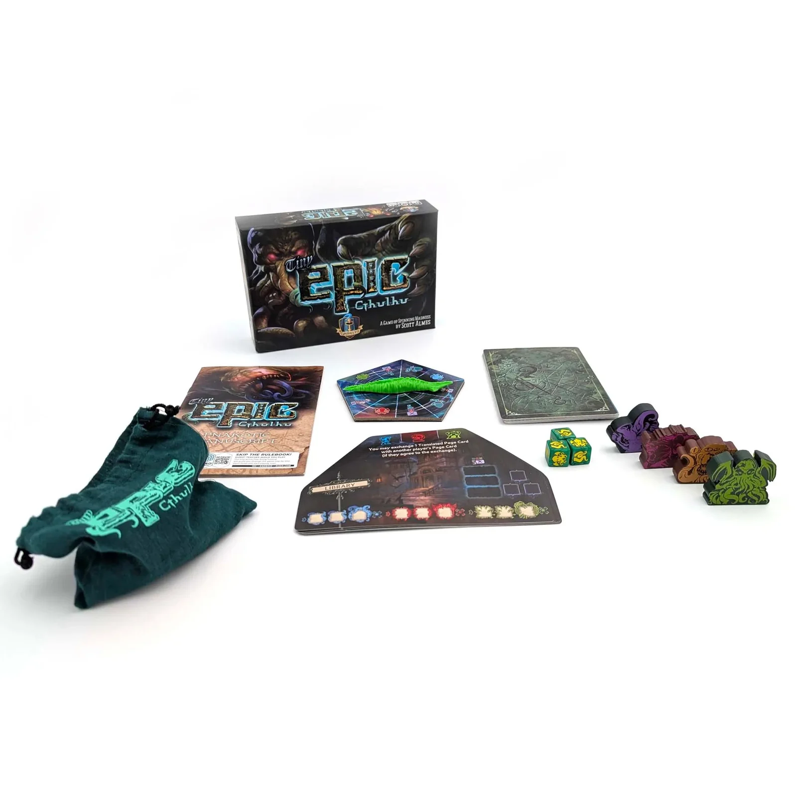
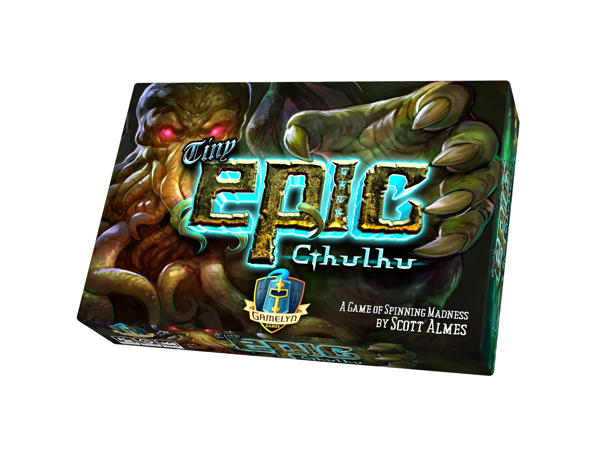
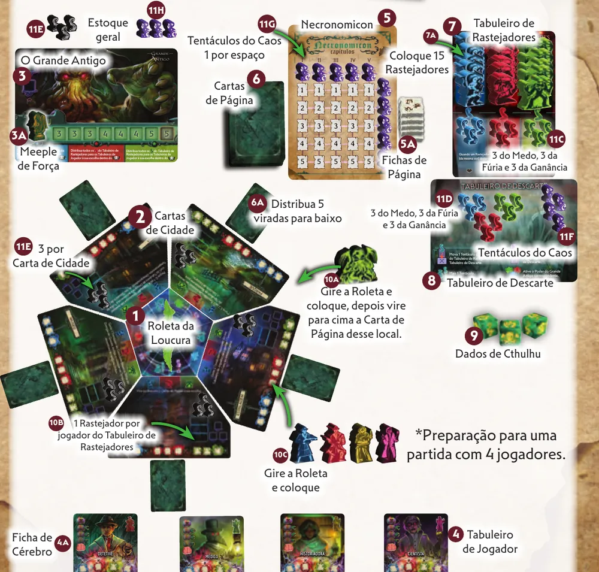
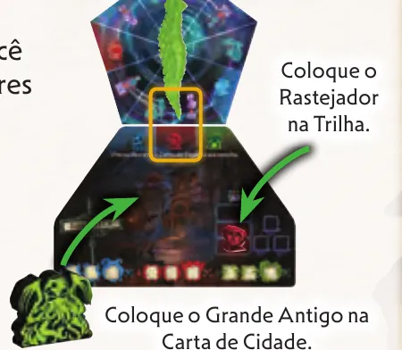
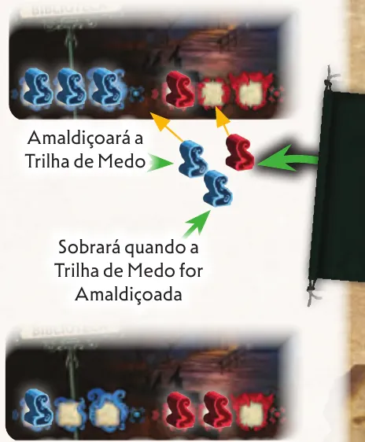
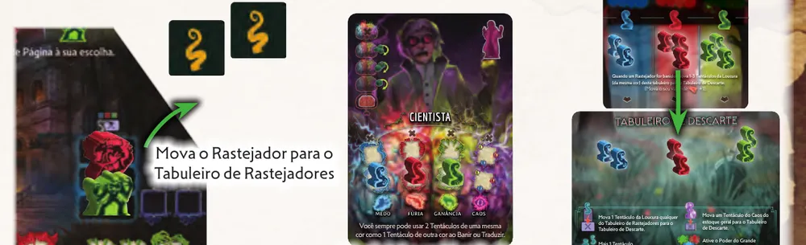
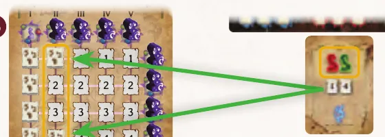
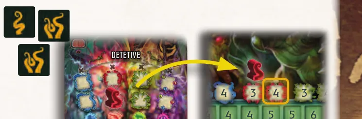

Imagem: Gamelyn Games · edição DeluxeCooperativo · Terror
Como jogar Tiny Epic Cthulhu
Para quem nunca jogou1 a 4 jogadores30 a 60 min14+Edição Asmodee (Galápagos)
· Redação Elite Boardgamers
Resumo em 1 minuto
Vocês juntam tentáculos para traduzir o Necronomicon e banir Rastejadores, e vencem juntos ao selar os seis locais de Portal do Grande Antigo antes que ele fique forte demais.
No começo do turno, a Roleta da Loucura espalha tentáculos pela cidade, faz surgir um Rastejador e move o Grande Antigo.
Depois, você faz até 3 ações: mover-se, coletar, banir, usar a Ação da Cidade ou traduzir uma Carta de Página.
Toda trilha que já está cheia e recebe mais uma peça fica Amaldiçoada, e a consequência pode custar a partida.
Como você aprende: 4 etapas, da mesa montada à contagem de pontosLeitura do essencial: cerca de 11 min
À vista, só o essencial para jogar. O que abre com + é explicação, exemplo, exercício ou regra de caso especial: abra quando precisar.
Comece a jogar em 4 minutos

Imagem: Gamelyn Games · edição Deluxe
Meta: em 4 minutos de leitura, montar a mesa e jogar o seu primeiro turno sem abrir o manual.
A ideia do jogo
Todos ganham ou perdem juntos p. 6. Primeiro vocês traduzem as 25 páginas do Necronomicon; depois, selam os seis locais de Portal do Grande Antigo. Tudo se paga com tentáculos, e toda trilha que transborda traz uma desgraça p. 6 e 9.
Monte a mesa
O marcado (depois) se monta já e se usa mais tarde p. 4 e 5.
Roleta da Loucura no centro; as 5 Cartas de Cidade em volta, no lado sorteado.
Tabuleiro do Grande Antigo (na primeira partida, Nyarlathotep), lado da Primeira Fase. Meeple de Força no espaço sem número.
Cada jogador: Tabuleiro de Jogador, meeple e Ficha de Cérebro embaixo na Trilha de Delírio.
Necronomicon com as Fichas de Página. Uma Carta de Página virada para baixo ao lado de cada Carta de Cidade.
Tabuleiro de Rastejadores com os 15 Rastejadores; Tabuleiro de Descarte; dados.
Bolsa de Compra de Tentáculos: 3 Tentáculos Ancestrais (pretos) e 9 de cada Tentáculo da Loucura: Medo (azul), Fúria (vermelho), Ganância (verde). Mais 3 de cada cor no Tabuleiro de Rastejadores e 3 de cada cor no Tabuleiro de Descarte.
3 Ancestrais em cada Carta de Cidade; o resto no estoque geral (depois).
Tentáculos do Caos (roxos): 2 jogadores, 2 na Trilha de Caos de cada um; 3 jogadores, 1 em cada e 1 no Tabuleiro de Descarte; 4 jogadores, 4 no Tabuleiro de Descarte. Mais 10 no Necronomicon (depois) e 3 no estoque geral.
Gire a Roleta: o Grande Antigo vai para a carta do Ponteiro Frontal (a ponta da frente), e a Carta de Página dali é virada para cima.
Um giro por jogador: um Rastejador vai para a carta do Ponteiro de Tentáculo (a ponta de trás), na cor que ele aponta na borda de dentro da carta.
Cada jogador gira e põe o seu meeple na carta do Ponteiro Frontal.
Tire da bolsa 2 Tentáculos da Loucura por Carta de Cidade, na trilha da cor, da esquerda para a direita. Ancestral volta para a bolsa.
Começa o mais jovem; depois, sentido horário p. 6.
Seu primeiro turno
Gire a Roleta (duas voltas no mínimo) e faça o que manda o ícone para onde aponta o Ponteiro Frontal p. 10.
Tire tentáculos da bolsa, um por vez, tantos quanto o número à direita do Meeple de Força: no começo, 3. Tentáculo da Loucura vai para a trilha da sua cor na carta do Ponteiro Frontal; Ancestral, para a Trilha de Energia do Grande Antigo; do Caos, para a sua Trilha de Caos p. 11.
Faça surgir um Rastejador na carta do Ponteiro de Tentáculo, na cor indicada. O Grande Antigo vai para essa carta p. 12.
Faça até 3 ações: Mover-se, Coletar Tentáculos da Loucura da sua carta, Banir um Rastejador, Ação da Cidade, Traduzir uma Carta de Página. Cada Tentáculo do Caos gasto dá uma ação a mais p. 12.
Passe a bolsa ao próximo jogador, em sentido horário p. 17.
Sem tentáculos nas suas trilhas, mover anda 1 carta, e coletar pega 1 tentáculo. Na Primeira Fase, ninguém passa nem para na carta do Grande Antigo p. 13.
Vocês vencem ao selar os seis locais de Portal. Perdem se o Meeple de Força chegar ao último espaço, se acabarem os Rastejadores do Tabuleiro de Rastejadores ou se a Ficha de Cérebro de alguém chegar ao topo da Trilha de Delírio p. 18.
Em vídeo. Ele complementa este guia; em caso de diferença, vale o manual.
TINY EPIC CTHULHU - Gameplay resumida, canal Duque Board Games · abrir no YouTubeTiny Epic Cthulhu - Como Jogar, canal Romir Play House · abrir no YouTube
0Antes de tudo: o que é este jogoOpcional

Imagem: Gamelyn Games · edição DeluxeAbrir esta seção
Em Tiny Epic Cthulhu, de 1 a 4 investigadores tentam conter um Grande Antigo que desperta na cidade de Nova Arkhamoore. O grupo vence ou perde junto p. 2, 3 e 6. Cada jogador é um personagem (Detetive, Policial, Historiadora, Cientista, Médico ou Sacerdote) com uma habilidade própria p. 3.
Na Primeira Fase, vocês traduzem Cartas de Página até cobrir os 25 espaços do Necronomicon. Na Segunda Fase, o Grande Antigo enfraquece, e vocês tentam selar os seis locais de Portal dele com os dados p. 6.
O motor são os Tentáculos da Loucura, de três cores: Medo (azul), Fúria (vermelho) e Ganância (verde). Eles pagam traduções, banimentos e selos, mas guardá-los também ajuda: Medo faz andar mais, Ganância faz coletar mais, Fúria limpa mais depois de banir p. 13, 14 e 24. O perigo é o transbordamento: quando uma peça precisa entrar numa trilha já cheia, a trilha fica Amaldiçoada, e vem uma consequência ruim p. 9.
1Como este guia ensinaOpcional
Imagem: Gamelyn Games · edição DeluxeAbrir esta seção
O guia tem quatro etapas, na ordem em que a partida acontece: montar a mesa; girar a Roleta e resolver as maldições; fazer as ações; e selar os Portais na Segunda Fase. Em cada etapa vêm a explicação, o passo a passo com as regras exatas e, no fim, os exercícios. Toque numa opção para ver a resposta certa e a explicação. No final, uma avaliação curta indica o que reler, e uma folha de consulta vai para a mesa.
2Etapa 1: montar a mesa
Por que funciona assim

A mesa montada para 4 jogadores: a Roleta da Loucura no centro, cercada pelas Cartas de Cidade com as Cartas de Página ao lado; acima, o Tabuleiro do Grande Antigo, o Necronomicon com os Tentáculos do Caos nas bordas e os Tabuleiros de Rastejadores e de Descarte. Os números marcam os passos da preparação. Ilustração: manual Asmodee p. 5Regra adicional: DificuldadeSobre a edição: Giros dos Rastejadores
Pratique esta etapa
Ver um exemplo resolvidoPratique esta etapa: exercícios com respostas
3Etapa 2: girar a Roleta e resolver as maldições
Por que funciona assim

O Ponteiro de Tentáculo aponta a cor vermelha na borda de dentro de uma Carta de Cidade: o Rastejador vermelho surge na Trilha de Rastejadores dessa carta, e o Grande Antigo vai para ela. Ilustração: manual Asmodee p. 12

A trilha azul de uma Carta de Cidade está cheia, e chegam 2 Tentáculos do Medo e 1 da Fúria. O primeiro do Medo amaldiçoa a trilha; o segundo sobra e ocupa o espaço mais à esquerda, já vazio. O da Fúria entra na trilha vermelha. Ilustração: manual Asmodee p. 9Regra adicional: Sobra depois da maldiçãoRegra adicional: Rastejador em faltaRegra adicional: Bolsa vaziaRegra adicional: Os Poderes do Grande AntigoSobre a edição: Três pontos em que o manual se contradiz
Pratique esta etapa
Ver um exemplo resolvidoPratique esta etapa: exercícios com respostas
4Etapa 3: fazer as ações
Por que funciona assim

Banir: o Rastejador vermelho volta para o Tabuleiro de Rastejadores; a Cientista tinha 1 Tentáculo da Fúria no começo do banimento, então 2 Tentáculos da Fúria passam do Tabuleiro de Rastejadores para o Tabuleiro de Descarte. Ilustração: manual Asmodee p. 15

Uma Carta de Página com os números 1 e 4: uma Ficha de Página cobre o espaço livre mais à esquerda da fileira 1, e outra, o da fileira 4. Ilustração: manual Asmodee p. 15Regra adicional: O Grande Antigo no seu localRegra adicional: RerrolarRegra adicional: A última páginaRegra adicional: HabilidadesSobre a edição: Página virada para baixoDica: Sugestão
Pratique esta etapa
Ver um exemplo resolvidoPratique esta etapa: exercícios com respostas
5Etapa 4: a Segunda Fase e o fim da partida
Por que funciona assim

O exemplo do manual: com 3 runas vermelhas, os dados dão 1, 2 e 2, soma 5, e o Tentáculo da Fúria vai cobrir o local vermelho de número 4 no lado da Segunda Fase do Tabuleiro do Grande Antigo. Ilustração: manual Asmodee p. 17Dica: Sugestão
Pratique esta etapa
Ver um exemplo resolvidoPratique esta etapa: exercícios com respostas
6Situações especiaisOpcional
Imagem: Gamelyn Games · edição DeluxeAbrir esta seçãoRegra adicional: Modo de Partida SoloRegra adicional: Variantes com AssistentesSobre a edição: O que o manual não detalha
7Avaliação finalOpcional
Imagem: Gamelyn Games · edição DeluxeAbrir esta seção
Responda sem consultar. Cada resposta diz o que reler se errar.
Quando uma trilha fica Amaldiçoada?
A maldição vem com a peça que não cabe p. 9. Se errou, releia a etapa 2.
Meeple de Força no início, sem "mais 1 tentáculo". Quantos tentáculos você tira no 1º Passo?
O número à direita do espaço inicial é 3 p. 11. Se errou, releia a etapa 2.
Onde surge o Rastejador do 1º Passo?
O Ponteiro de Tentáculo escolhe carta e cor; o Grande Antigo vai para lá p. 12. Se errou, releia a etapa 2.
Sua Ficha de Cérebro avança quando:
Só essa maldição move a Ficha de Cérebro p. 12. Se errou, releia a etapa 2.
Sem Tentáculos da Fúria, você bane um Rastejador verde. Quantos Tentáculos da Ganância saem do Tabuleiro de Rastejadores?
Sem Fúria, sai 1, da cor do Rastejador p. 14. Se errou, releia a etapa 3.
Você rola 0, 2 e 1 contra um local de Portal 4. Selou?
Selar soma os dados p. 16. Se errou, releia a etapa 4.
8Para consultar durante a partida
Imagem: Gamelyn Games · edição Deluxe
Seu turno (p. 10 a 17):
Gire a Roleta (pelo menos duas voltas; parou na linha, conta o local seguinte em sentido horário).
Ação do Ponteiro Frontal: Tentáculo da Loucura do Tabuleiro de Rastejadores para o Tabuleiro de Descarte; Tentáculo do Caos do estoque geral para o Tabuleiro de Descarte; Poder do Grande Antigo da cor; ou mais 1 tentáculo neste turno.
Tire da bolsa o número à direita do Meeple de Força, um por vez. Loucura: carta do Ponteiro Frontal. Ancestral: Trilha de Energia. Caos: a sua Trilha de Caos.
Rastejador na carta do Ponteiro de Tentáculo, na cor indicada; o Grande Antigo vai para lá.
Até 3 ações (mais 1 por Tentáculo do Caos gasto). Habilidade do personagem: sem custo de ação.
Passe a bolsa ao próximo jogador, em sentido horário p. 17.
Trilha de Temperamento
0 tentáculos
1
2
Também serve para
Medo (azul)
anda 1
até 2
até 3
pagar Rastejador azul e páginas
Fúria (vermelho)
move 1 depois de banir
2
3
pagar Rastejador vermelho e páginas
Ganância (verde)
coleta 1
2
3
pagar Rastejador verde e páginas
Caos (roxo)
curinga
ação adicional, Selar um Portal
Ações: Mover-se; Coletar (da sua carta, máximo 2 por trilha, sem maldição); Banir (1 dado por Rastejador, paga o maior dado na cor do Rastejador); Ação da Cidade (uma vez por turno); Traduzir (Primeira Fase); Selar um Portal (Segunda Fase, na carta do Grande Antigo, 1 dado por runa da cor até 3, soma igual ou maior que o número).
Dados: cabeça = 0, um tentáculo = 1, dois tentáculos = 2.
Maldições: Trilha de Loucura da cidade, Poder da cor; Trilha de Energia, Força +1 e Tabuleiro de Descarte para a bolsa; Trilha de Rastejadores, 1 Ancestral da carta para o Tabuleiro de Descarte; Trilha de Temperamento, Ficha de Cérebro +1; Trilha de Caos, perde os Tentáculos do Caos.
Primeira Fase: não passe nem pare na carta do Grande Antigo.
Fim: vitória com os 6 locais de Portal selados; derrota com Força no último espaço, Tabuleiro de Rastejadores vazio ou um jogador no topo da Trilha de Delírio.
Vídeos: TINY EPIC CTHULHU - Gameplay resumida, canal Duque Board Games; Tiny Epic Cthulhu - Como Jogar, canal Romir Play House (títulos e canais conferidos pelo oEmbed do YouTube em 01/11/2026). Não usados como fonte de regra.
Regras conferidas no manual oficial da edição brasileira, publicado pela Asmodee (selo Galápagos, livro de regras v1.0 de 24 páginas, tradução de Fabio Macedo). Os nomes são os impressos nesse manual, e as páginas citadas são as dele. Este guia ensina a partida de 2 a 4 jogadores; o Modo de Partida Solo aparece resumido nas Situações especiais.